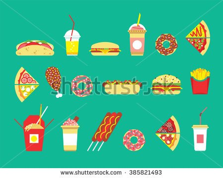
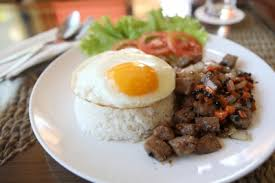
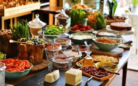
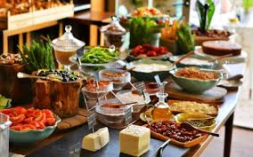
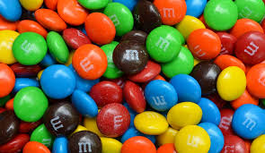
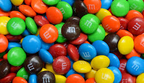

Food
Food is a vital part of life. I have made this website to show diffrent styles and types of food and how to make them.
- Some foods are known for being good for you
- Others are less appetizing.
- Different cultures have diffrent ways of eating and serving food.
- A typical meal can vary.  
- But over all, tast is what maters.


 


 
